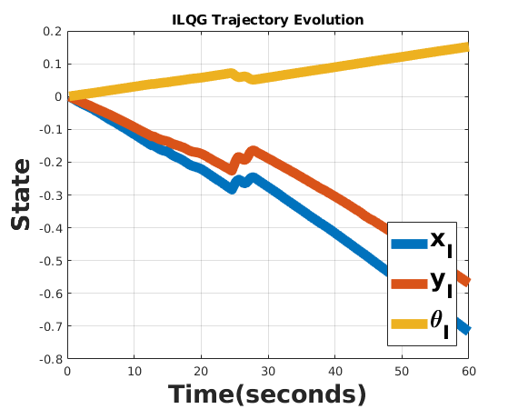

Contents
Plot Trajectory evolution
close all
cd('/home/lex/catkin_ws/src/youbot/youbot_navigation/data')
q = load('trajectory.txt');
qstar = repmat([0.82452343, 0.59753333, 0.07282408], [length(q), 1]);
time_scale = 0.3;
X = time_scale* linspace(1, length(q), length(q));
p = plot(X, [q(:,1), q(:,2), q(:,3)]); hold on
title("ILQG Trajectory Evolution")
p(1).LineWidth = 8;
p(1).MarkerSize = 10;
p(2).LineWidth = 8;
p(2).MarkerSize = 10;
p(3).LineWidth = 8;
p(3).MarkerSize = 10;
lgd = legend({'x_I', 'y_I', '\theta_I', 'x_I^*', 'y_I^*', '\theta_I^*'}, 'location', 'southeast', ...
'FontSize',20, 'FontWeight', 'bold')
xlabel("Time(seconds)", 'FontSize',20, 'FontWeight', 'bold')
ylabel("State", 'FontSize',20, 'FontWeight', 'bold')
grid on
Warning: Ignoring extra legend entries.
lgd =
Legend (x_I, y_I, \theta_I) with properties:
String: {'x_I' 'y_I' '\theta_I'}
Location: 'southeast'
Orientation: 'vertical'
FontSize: 20
Position: [0.7440 0.1413 0.1375 0.3262]
Units: 'normalized'
Use GET to show all properties

Verifying equations
clc; close all; clear all
syms r l a t pd1 pd2 pd3 pd4 xd yd td real
Zetad = [xd yd td]';
rotmat = [-sin(t) cos(t) 0; ...
cos(t), sin(t) 0; ...
0 , 0, 1];
Phid = [pd1, pd2, pd3, pd4]';
J = [sqrt(2)/2, sqrt(2)/2, l*sin(pi/4-a); ...
-sqrt(2)/2, sqrt(2)/2, l*sin(pi/4-a); ...
-sqrt(2)/2, -sqrt(2)/2, l*sin(pi/4-a); ...
sqrt(2)/2, -sqrt(2)/2, l*sin(pi/4-a)];
Phid_mat = sqrt(2) * J * rotmat;
Phid_eq = -(1/r) * Phid_mat * Zetad
Phid = -sqrt(2)/r * J * Zetad
Phid_eq =
(2^(1/2)*l*td*sin(a - pi/4))/r - (yd*(cos(t) + sin(t)))/r - (xd*(cos(t) - sin(t)))/r
(yd*(cos(t) - sin(t)))/r - (xd*(cos(t) + sin(t)))/r + (2^(1/2)*l*td*sin(a - pi/4))/r
(xd*(cos(t) - sin(t)))/r + (yd*(cos(t) + sin(t)))/r + (2^(1/2)*l*td*sin(a - pi/4))/r
(xd*(cos(t) + sin(t)))/r - (yd*(cos(t) - sin(t)))/r + (2^(1/2)*l*td*sin(a - pi/4))/r
Phid =
(2^(1/2)*l*td*sin(a - pi/4))/r - yd/r - xd/r
xd/r - yd/r + (2^(1/2)*l*td*sin(a - pi/4))/r
xd/r + yd/r + (2^(1/2)*l*td*sin(a - pi/4))/r
yd/r - xd/r + (2^(1/2)*l*td*sin(a - pi/4))/r
Define the Lagrangian
syms Ib t td mb xid yid d2 d1 mw a ...
mw l I1 I2 I3 I4 r
L = 0.5 * Ib * td^2 ...
+ 0.5 * mb * ( (-xid*sin(t) + yid*cos(t) + td*d2)^2 ...
+ (xid*cos(t) + yid*sin(t) - td*d1)^2 ) ...
+ 0.5 * mw * ( ( xid * (sin(t)- cos(t)) - yid * (cos(t) + sin(t)) - sqrt(2)*l*td * sin(pi/4-a))^2 ...
+ (-xid * (sin(t)+ cos(t)) + yid * (cos(t) - sin(t)) - sqrt(2)*l*td * sin(pi/4-a))^2 ...
+ ( xid * (-sin(t)+ cos(t)) + yid * (cos(t) + sin(t)) - sqrt(2)*l*td * sin(pi/4-a))^2 ...
+ (xid * (sin(t)+ cos(t)) + yid * (-cos(t) + sin(t)) - sqrt(2)*l*td * sin(pi/4-a))^2 ) ...
+ 1/(2*r^2) * I1 * + (xid * (sin(t)- cos(t)) - yid * (cos(t) + sin(t)) - sqrt(2)*l*td * sin(pi/4-a))^2 ...
+ 1/(2*r^2) * I2 * + (-xid * (sin(t)+ cos(t)) + yid * (cos(t) - sin(t)) - sqrt(2)*l*td * sin(pi/4-a))^2 ...
+ 1/(2*r^2) * I3 * + (xid * (-sin(t)+ cos(t)) + yid * (cos(t) + sin(t)) - sqrt(2)*l*td * sin(pi/4-a))^2 ...
+ 1/(2*r^2) * I4 * + (xid * (sin(t)+ cos(t)) + yid * (-cos(t) + sin(t)) - sqrt(2)*l*td * sin(pi/4-a))^2;
syms t1 t2 t3 t4 f phi1d phi2d phi3d phi4d
left_mult = [(t1 - r* sign(phi1d)*f), (t2 - r* sign(phi2d)*f), (t3 - r* sign(phi3d)*f), (t4 - r* sign(phi4d)*f)];
F1 = left_mult * Phid_mat(1:end,1);
F2 = left_mult * Phid_mat(1:end,2);
F3 = left_mult * Phid_mat(1:end,3);
eq_xid = F1 - diff(L, xid) * xid - diff(L, xid);
eq_yid = F2 - diff(L, yid) * yid - diff(L, yid);
eq_td = F3 - diff(L, td) * td - diff(L, td);
dynamics_eq = [eq_xid; eq_yid; eq_td];
simplify(dynamics_eq)
ans =
-(I1*xid + I2*xid + I3*xid + I4*xid + I1*xid^2 + I2*xid^2 + I3*xid^2 + I4*xid^2 + mb*r^2*xid + 4*mw*r^2*xid + I1*yid*cos(2*t) - I2*yid*cos(2*t) + I3*yid*cos(2*t) - I4*yid*cos(2*t) - I1*xid*sin(2*t) + I2*xid*sin(2*t) - I3*xid*sin(2*t) + I4*xid*sin(2*t) + mb*r^2*xid^2 + 4*mw*r^2*xid^2 - r^2*t1*cos(t) - r^2*t2*cos(t) + r^2*t3*cos(t) + r^2*t4*cos(t) + r^2*t1*sin(t) - r^2*t2*sin(t) - r^2*t3*sin(t) + r^2*t4*sin(t) - I1*xid^2*sin(2*t) + I2*xid^2*sin(2*t) - I3*xid^2*sin(2*t) + I4*xid^2*sin(2*t) + I2*l*td*cos(a + t) - I4*l*td*cos(a + t) - I1*l*td*sin(a + t) + I3*l*td*sin(a + t) + f*r^3*cos(t)*sign(phi1d) + f*r^3*cos(t)*sign(phi2d) - f*r^3*cos(t)*sign(phi3d) - f*r^3*cos(t)*sign(phi4d) - f*r^3*sign(phi1d)*sin(t) + f*r^3*sign(phi2d)*sin(t) + f*r^3*sign(phi3d)*sin(t) - f*r^3*sign(phi4d)*sin(t) + I1*l*td*cos(a - t) - I3*l*td*cos(a - t) - I2*l*td*sin(a - t) + I4*l*td*sin(a - t) + I1*xid*yid*cos(2*t) - I2*xid*yid*cos(2*t) + I3*xid*yid*cos(2*t) - I4*xid*yid*cos(2*t) - I2*l*td*xid*sin(a - t) + I4*l*td*xid*sin(a - t) - d1*mb*r^2*td*cos(t) - d2*mb*r^2*td*sin(t) + I2*l*td*xid*cos(a + t) - I4*l*td*xid*cos(a + t) - I1*l*td*xid*sin(a + t) + I3*l*td*xid*sin(a + t) + I1*l*td*xid*cos(a - t) - I3*l*td*xid*cos(a - t) - d1*mb*r^2*td*xid*cos(t) - d2*mb*r^2*td*xid*sin(t))/r^2
-(I1*yid + I2*yid + I3*yid + I4*yid + I1*yid^2 + I2*yid^2 + I3*yid^2 + I4*yid^2 + mb*r^2*yid + 4*mw*r^2*yid + I1*xid*cos(2*t) - I2*xid*cos(2*t) + I3*xid*cos(2*t) - I4*xid*cos(2*t) + I1*yid*sin(2*t) - I2*yid*sin(2*t) + I3*yid*sin(2*t) - I4*yid*sin(2*t) + mb*r^2*yid^2 + 4*mw*r^2*yid^2 - r^2*t1*cos(t) + r^2*t2*cos(t) + r^2*t3*cos(t) - r^2*t4*cos(t) - r^2*t1*sin(t) - r^2*t2*sin(t) + r^2*t3*sin(t) + r^2*t4*sin(t) + I1*yid^2*sin(2*t) - I2*yid^2*sin(2*t) + I3*yid^2*sin(2*t) - I4*yid^2*sin(2*t) + I1*l*td*cos(a + t) - I3*l*td*cos(a + t) + I2*l*td*sin(a + t) - I4*l*td*sin(a + t) + f*r^3*cos(t)*sign(phi1d) - f*r^3*cos(t)*sign(phi2d) - f*r^3*cos(t)*sign(phi3d) + f*r^3*cos(t)*sign(phi4d) + f*r^3*sign(phi1d)*sin(t) + f*r^3*sign(phi2d)*sin(t) - f*r^3*sign(phi3d)*sin(t) - f*r^3*sign(phi4d)*sin(t) - I2*l*td*cos(a - t) + I4*l*td*cos(a - t) - I1*l*td*sin(a - t) + I3*l*td*sin(a - t) + I1*xid*yid*cos(2*t) - I2*xid*yid*cos(2*t) + I3*xid*yid*cos(2*t) - I4*xid*yid*cos(2*t) - I1*l*td*yid*sin(a - t) + I3*l*td*yid*sin(a - t) + d2*mb*r^2*td*cos(t) - d1*mb*r^2*td*sin(t) + I1*l*td*yid*cos(a + t) - I3*l*td*yid*cos(a + t) + I2*l*td*yid*sin(a + t) - I4*l*td*yid*sin(a + t) - I2*l*td*yid*cos(a - t) + I4*l*td*yid*cos(a - t) + d2*mb*r^2*td*yid*cos(t) - d1*mb*r^2*td*yid*sin(t))/r^2
-(I1*l^2*td^2 + I2*l^2*td^2 + I3*l^2*td^2 + I4*l^2*td^2 + Ib*r^2*td^2 + I1*l^2*td + I2*l^2*td + I3*l^2*td + I4*l^2*td + Ib*r^2*td - I1*l^2*td*sin(2*a) - I2*l^2*td*sin(2*a) - I3*l^2*td*sin(2*a) - I4*l^2*td*sin(2*a) + I2*l*xid*cos(a + t) - I4*l*xid*cos(a + t) + I1*l*yid*cos(a + t) - I3*l*yid*cos(a + t) - I1*l*xid*sin(a + t) + I3*l*xid*sin(a + t) + d1^2*mb*r^2*td^2 + d2^2*mb*r^2*td^2 + I2*l*yid*sin(a + t) - I4*l*yid*sin(a + t) + 4*l^2*mw*r^2*td^2 - I1*l^2*td^2*sin(2*a) - I2*l^2*td^2*sin(2*a) - I3*l^2*td^2*sin(2*a) - I4*l^2*td^2*sin(2*a) + I1*l*xid*cos(a - t) - I3*l*xid*cos(a - t) - I2*l*yid*cos(a - t) + I4*l*yid*cos(a - t) - I2*l*xid*sin(a - t) + I4*l*xid*sin(a - t) - I1*l*yid*sin(a - t) + I3*l*yid*sin(a - t) - l*r^2*t1*cos(a) - l*r^2*t2*cos(a) - l*r^2*t3*cos(a) - l*r^2*t4*cos(a) + d1^2*mb*r^2*td + d2^2*mb*r^2*td + 4*l^2*mw*r^2*td + l*r^2*t1*sin(a) + l*r^2*t2*sin(a) + l*r^2*t3*sin(a) + l*r^2*t4*sin(a) - I2*l*td*xid*sin(a - t) + I4*l*td*xid*sin(a - t) - I1*l*td*yid*sin(a - t) + I3*l*td*yid*sin(a - t) - 4*l^2*mw*r^2*td*sin(2*a) - d1*mb*r^2*xid*cos(t) + d2*mb*r^2*yid*cos(t) - d2*mb*r^2*xid*sin(t) - d1*mb*r^2*yid*sin(t) - 4*l^2*mw*r^2*td^2*sin(2*a) + I2*l*td*xid*cos(a + t) - I4*l*td*xid*cos(a + t) + I1*l*td*yid*cos(a + t) - I3*l*td*yid*cos(a + t) - I1*l*td*xid*sin(a + t) + I3*l*td*xid*sin(a + t) + I2*l*td*yid*sin(a + t) - I4*l*td*yid*sin(a + t) + f*l*r^3*cos(a)*sign(phi1d) + f*l*r^3*cos(a)*sign(phi2d) + f*l*r^3*cos(a)*sign(phi3d) + f*l*r^3*cos(a)*sign(phi4d) - f*l*r^3*sin(a)*sign(phi1d) - f*l*r^3*sin(a)*sign(phi2d) - f*l*r^3*sin(a)*sign(phi3d) - f*l*r^3*sin(a)*sign(phi4d) + I1*l*td*xid*cos(a - t) - I3*l*td*xid*cos(a - t) - I2*l*td*yid*cos(a - t) + I4*l*td*yid*cos(a - t) - d1*mb*r^2*td*xid*cos(t) + d2*mb*r^2*td*yid*cos(t) - d2*mb*r^2*td*xid*sin(t) - d1*mb*r^2*td*yid*sin(t))/r^2